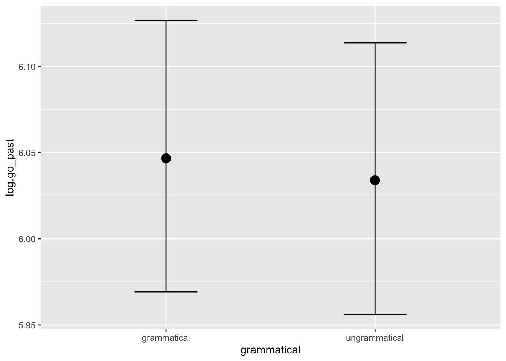
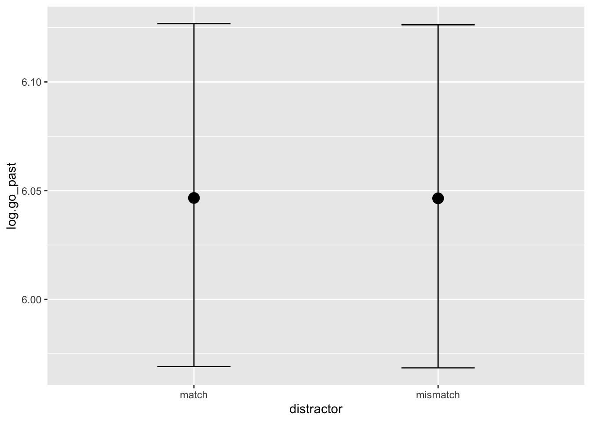
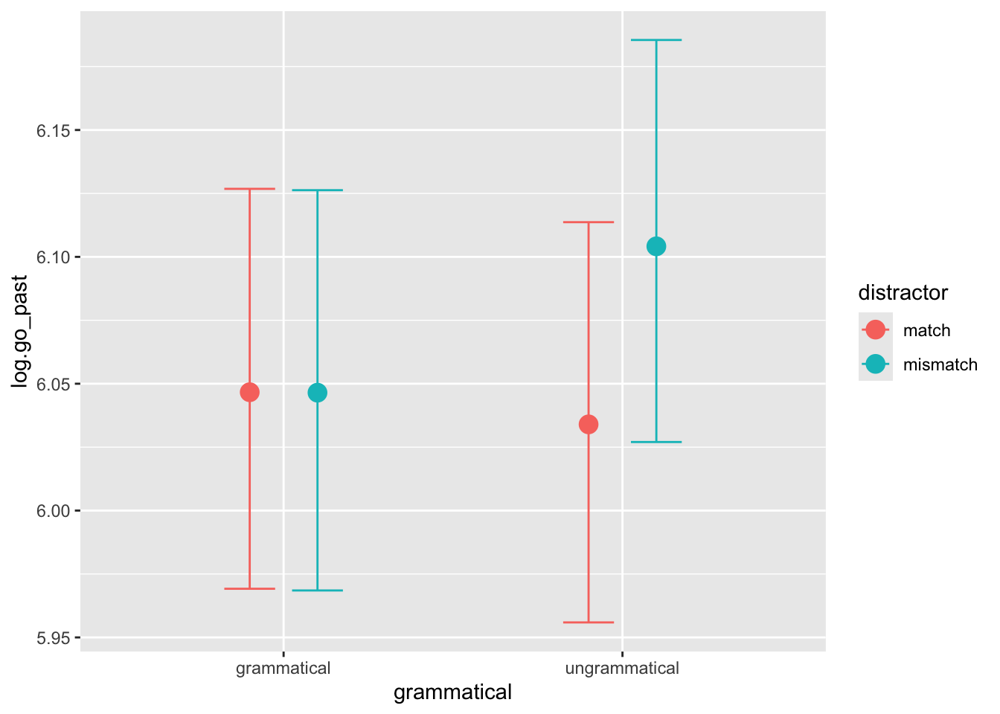

library(dplyr)library(ggplot2)library(brms)relative_path <-'Dropbox/ch5-analysis-deDiosFlores/'#relative_path <- './'#'Dropbox/ch5-analysis-deDiosFlores/'### BRMS settings ###options(mc.cores = parallel::detectCores())chns <-2#brms number of chainsitrs <-1000#brms number of iterations per chain
What I am doing here is fitting and comparing a model with random effects and intercept only vs. one that has control as fixed effect. The criterion for comparison is (an approximation) of Leave-One-Out (LOO). This gives you, for each data point, the negative (log) likelihood that a model that had seen all the data but without this data point assigns to it. Intuitively: How likely the model thinks the new datapoint would be if it hadn’t seen it. It then sums up all the individual negative log likelihoods and that’s what is called ELPD (expected log predictive density). Lower is better. In the following, I will mainly be using elpd_diff as a scoring-criterion. This is the difference in ELPD from the best model (highest in the table).
To illustrate:
Code
loo_compare(m0, m1) %>%knitr::kable()
elpd_diff
se_diff
elpd_loo
se_elpd_loo
p_loo
se_p_loo
looic
se_looic
m0
0.0000000
0.000000
-1987.633
62.11188
108.0821
3.166374
3975.267
124.2238
m1
-0.1084262
1.007991
-1987.742
62.23480
108.6146
3.184930
3975.484
124.4696
In terms of ELPD, the model with only an intercept (m0) is better than the one that additionally has control as a fixed effect. You can see, however, that the standard error in their difference in ELPD (se_diff) is high (1.0) when compared to the elpd_diff itself (-0.1). So the model comparison is essentially telling us that it cannot pick one model over the other but that, if we had to choose, we should go with the one with only the intercept. This makes sense because that’s the simpler model. If adding control doesn’t make better characterize the data then it’s not worth it.
So if control is not worth it, then the estimated fixed effect for it in model m1 will probably also be small and the 95% credible interval will cross 0.
Let’s see:
Code
fixef(m1) %>%knitr::kable()
Estimate
Est.Error
Q2.5
Q97.5
Intercept
5.7471606
0.0406015
5.6667828
5.8253732
controlsubject
0.0113588
0.0117004
-0.0115127
0.0341941
As expected.
Summary (Go past: region 3)
There is no effect of control. We know this both from the estimate of the model itself and from the model comparison against a simpler model.
There’s a lot of uncertainty about which model is best. The difference is small. The model with only the intercept (m0) wins because it’s the simplest one.
Summary (Go past: region 6)
There is no clear effect of control, grammaticality, distractor; or their interaction. This is in line with Iria’s PhD results.
OK. So this is a lot more interesting. We can see that the best models are m6 (fixed effect: grammatical * distractor) closely followed by m7 (triple interaction) and then m3 (fixed effect: distractor). This is in line with what we discussed, for whatever reason, distractor seems to be best in predicting log.first_pass but having information about grammaticality also helps. The information about control is pretty secondary.
Let’s look at the top two models.
Here’s the model with no control:
Code
m6 %>%fixef() %>% knitr::kable()
Estimate
Est.Error
Q2.5
Q97.5
Intercept
6.0472949
0.0400819
5.9691807
6.1268106
grammaticalungrammatical
-0.0128717
0.0164290
-0.0454225
0.0195766
distractormismatch
-0.0010148
0.0163748
-0.0328374
0.0312813
grammaticalungrammatical:distractormismatch
0.0712294
0.0230032
0.0256673
0.1162042
So it’s only the interaction that is suggested to have a clear (positive) effect.
Based on the above, it may make sense to also look at a model that only has the interaction term (m8: grammatical:distractor); another with the interaction and a separate effect for grammatical (m9: grammatical + grammatical:distractor); and the inverse (m10: distractor + grammatical:distractor).
m8 has a lot of convergence issues so I’ll ignore it for now. This could be addressed if we were really interested in it but I think it’s not that important since we have many measures/models to look at that give us a similar impression of the same thing.
Most of the new models are (essentially) as good as m6 so there’s no reason to dig further.
For completeness’ sake, here are the fixed effects of m10:
Code
fixef(m10) %>% knitr::kable()
Estimate
Est.Error
Q2.5
Q97.5
Intercept
6.0485158
0.0400983
5.9701412
6.1272978
distractormismatch
-0.0010202
0.0163654
-0.0332574
0.0310963
distractormatch:grammaticalungrammatical
-0.0130873
0.0163869
-0.0452289
0.0189587
distractormismatch:grammaticalungrammatical
0.0585473
0.0162942
0.0267570
0.0903286
What survives is the positive effect of mismatch with ungrammatical. But I think the easiest model to present is m6 since it’s more in line with what people usually look at :
Code
fixef(m6) %>% knitr::kable()
Estimate
Est.Error
Q2.5
Q97.5
Intercept
6.0472949
0.0400819
5.9691807
6.1268106
grammaticalungrammatical
-0.0128717
0.0164290
-0.0454225
0.0195766
distractormismatch
-0.0010148
0.0163748
-0.0328374
0.0312813
grammaticalungrammatical:distractormismatch
0.0712294
0.0230032
0.0256673
0.1162042
In pictures:
Code
conditional_effects(m6)



Summary (Go past: region 7)
There is a small but pretty robust effect on the interaction of distractor and grammaticality. I am currently not recovering an effect of distractor on its own in models with the interaction